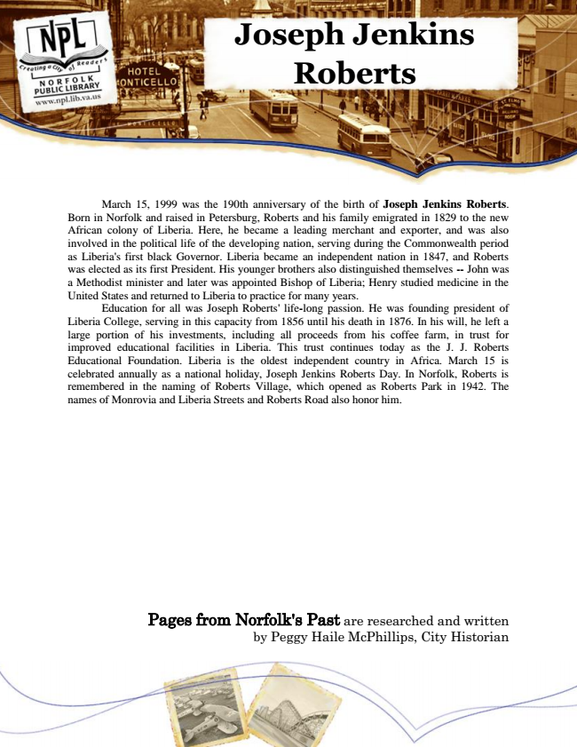

Joseph Jenkins Roberts
March 15, 1999 was the 190th anniversary of the birth of Joseph Jenkins Roberts. Born in Norfolk and raised in Petersburg, Roberts and his family emigrated in 1829 to the new African colony of Liberia. Here, he became a leading merchant and exporter, and was also involved in the political life of the developing nation, serving during the Commonwealth period as Liberia's first black Governor. Liberia became an independent nation in 1847, and Roberts was elected as its first President. His younger brothers also distinguished themselves -- John was a Methodist minister and later was appointed Bishop of Liberia; Henry studied medicine in the United States and returned to Liberia to practice for many years.
Education for all was Joseph Roberts' life-long passion. He was founding president of Liberia College, serving in this capacity from 1856 until his death in 1876. In his will, he left a large portion of his investments, including all proceeds from his coffee farm, in trust for improved educational facilities in Liberia. This trust continues today as the J. J. Roberts Educational Foundation. Liberia is the oldest independent country in Africa. March 15 is celebrated annually as a national holiday, Joseph Jenkins Roberts Day. In Norfolk, Roberts is remembered in the naming of Roberts Village, which opened as Roberts Park in 1942. The names of Monrovia and Liberia Streets and Roberts Road also honor him.
Pages from Norfolk's Past are researched and written by Peggy Haile McPhillips, City Historian